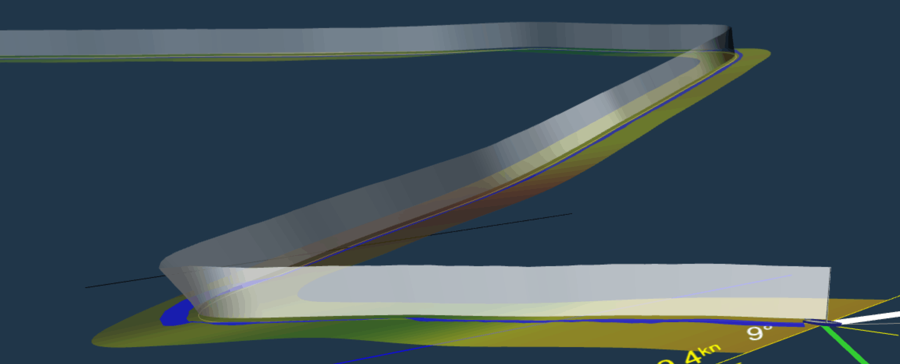

The main view shows your yacht, it's attitude, and (up to) three ribbons of data streaming away from it.
These ribbons show the basic properties of the recording at the best sample rate we can obtain (typically 1Hz but on Bluetooth recordings this can be as much as 5Hz). The ribbons are:
Mast Ribbon (upright, white/grey) shows the passage the mast has taken through the air, thus visualising heel and progress through manoeuvres.
Brightness represents the speed over ground as reported by GPS. White is "full speed", being the highest speed experienced in the last 60 seconds of data, with the grey showing reductions below this speed. In the picture above we can clearly see patches of grey around the tacks.
Wind Ribbon (flat, coloured) shows the wind field experienced by the yacht during the recording. It is drawn at a right angle to the true wind direction (an 'equal upwind' line).
Brightness represents the wind speed as reported by the anemometer. In the same way as the mast ribbon, bright implies "full speed" as in the best speed experienced in the last 60 seconds, and dullness shows reductions below this speed. In the picture above you can see a lull in the wind and reduction in speed over ground occurring simultaneously just before the second tack. If we were wondering what we did wrong to make the boat go slower, the answer is "nothing".
Colouring shows whether the current tack is positively biased (green) or negative (red) compared to the overall wind direction for the leg. See "A note on tack bias" on the numbers page.
Rudder Ribbon (flat, blue) shows the movements of the rudder if this data is available along with a readout of the rudder angle. It is oriented as a tiller might be - thus 'to windward' implies 'bearing off'. The recording above shows a slight lee helm followed by significant rudder input to tack.
The sailing page shows a number of common scenarios using the ribbons and will help in growing familiarity.